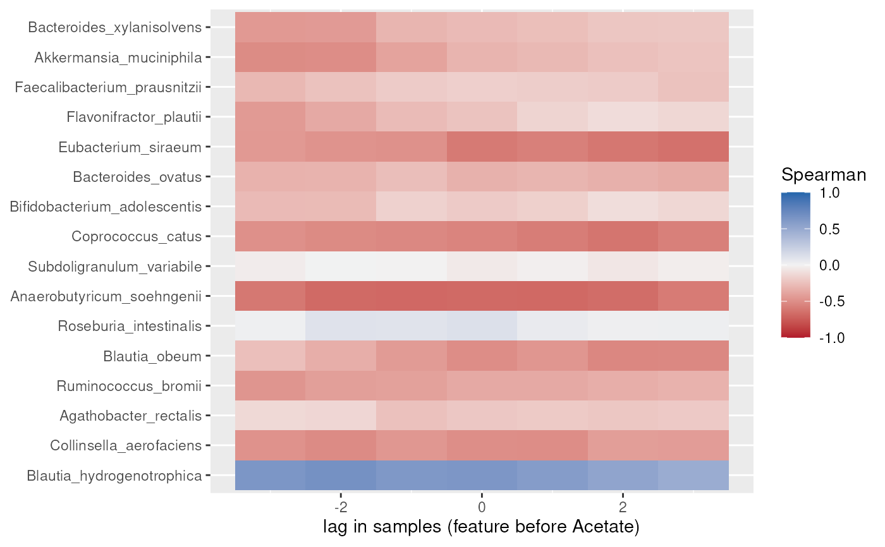

Plot lagged correlations of features with a target
Source:R/AllGenerics.R, R/plotLagHeatmap.R, R/zzz-mae.R
plotLagHeatmap.RdplotLagHeatmap() correlates each feature with a target series
shifted by a number of samples within each subject, and draws the
correlations as features by lag tiles.
Usage
plotLagHeatmap(x, ...)
# S4 method for class 'SummarizedExperiment'
plotLagHeatmap(
x,
target,
time.col,
group = NULL,
assay.type = "counts",
features = NULL,
top = 20,
max.lag = 3,
...
)
# S4 method for class 'MultiAssayExperiment'
plotLagHeatmap(x, target, ..., experiment = 1L, target.experiment = NULL)Arguments
- x
a
SummarizedExperimentorMultiAssayExperimentobject. For aMultiAssayExperiment,time.colandgroupare columns of itscolData.- ...
additional arguments passed to
geom_tile.- target
Character scalar. Specifies the target series: a column ofcolData(x), a row ofassay(x, assay.type), or"<dimred>:<component>".- time.col
Character scalar. Specifies the column fromcolData(x)that contains sampling times: numeric,Date,POSIXctor a factor of visits.- group
Character scalar. Specifies the column fromcolData(x)that identifies subjects. IfNULL, all samples form one series. (Default:NULL)- assay.type
Character scalar. Specifies the assay of the features. (Default:"counts")- features
Character vector. Features to correlate. IfNULL, uses thetopfeatures with the largest mean. (Default:NULL)- top
Integer scalar. Number of features whenfeaturesisNULL. (Default:20)- max.lag
Integer scalar. Largest lag in both directions, in samples or, for visits, in visits. (Default:3)- experiment
Character scalarorinteger scalar. For aMultiAssayExperiment, the experiment to plot; its samples get thecolDataofx. (Default:1L)- target.experiment
Character scalarorinteger scalar. For aMultiAssayExperiment, the experiment holdingtarget, looked up there as for aSummarizedExperiment, in its first assay for a feature. Only samples whose primary sample is in both experiments are used. IfNULL,targetis looked up inexperiment. (Default:NULL)
Details
At lag \(k\), each feature at a sample is paired with the target
\(k\) samples later in the same subject. For visits (a factor
time.col), it is paired with the target \(k\) visits later, and
samples without a sample \(k\) visits away are left out. Feature and
target are centred on their mean over the pairs of each subject, so that
differences between subjects do not drive the correlation, and the
Spearman correlation is computed over all pairs. Positive lags show
features that change before the target, negative lags features that
follow it. For other times, lags count samples, so they are comparable
across subjects only for even sampling.
Examples
# Species that change before or after acetate in three bioreactors
data("minimalgut", package = "miaTime")
tse <- mia::transformAssay(minimalgut, method = "clr", pseudocount = 1)
plotLagHeatmap(tse, target = "Acetate", time.col = "Time.hr",
group = "StudyIdentifier", assay.type = "clr")

# The same with acetate from a separate experiment
cd <- SummarizedExperiment::colData(minimalgut)
scfa <- SummarizedExperiment::SummarizedExperiment(
t(as.matrix(cd[, c("Acetate", "Butyrate", "Propionate")])))
mae <- MultiAssayExperiment::MultiAssayExperiment(
experiments = list(species = tse, SCFA = scfa), colData = cd)
plotLagHeatmap(mae, target = "Acetate", time.col = "Time.hr",
group = "StudyIdentifier", experiment = "species",
target.experiment = "SCFA", assay.type = "clr")